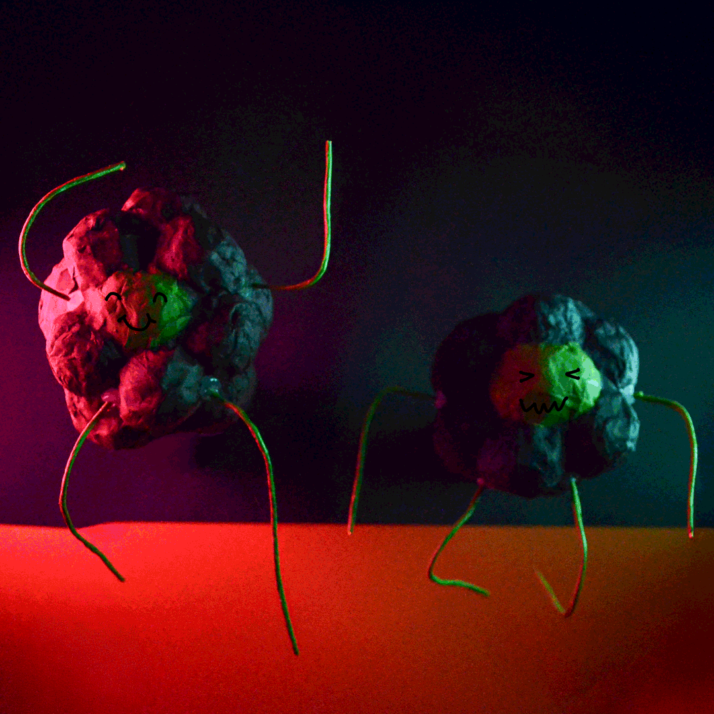

Animation
Two versions of the same Gif — stop motion animation and illustrated animation. First semester project 2024.


Short animated video about beauty standards and the culture surrounding cosmetic procedures. Titled Two Faced, the project reflects on the pressure to meet idealised appearances and the impact of the beauty industry. Created as a group assignment, Second semester project, 2025.